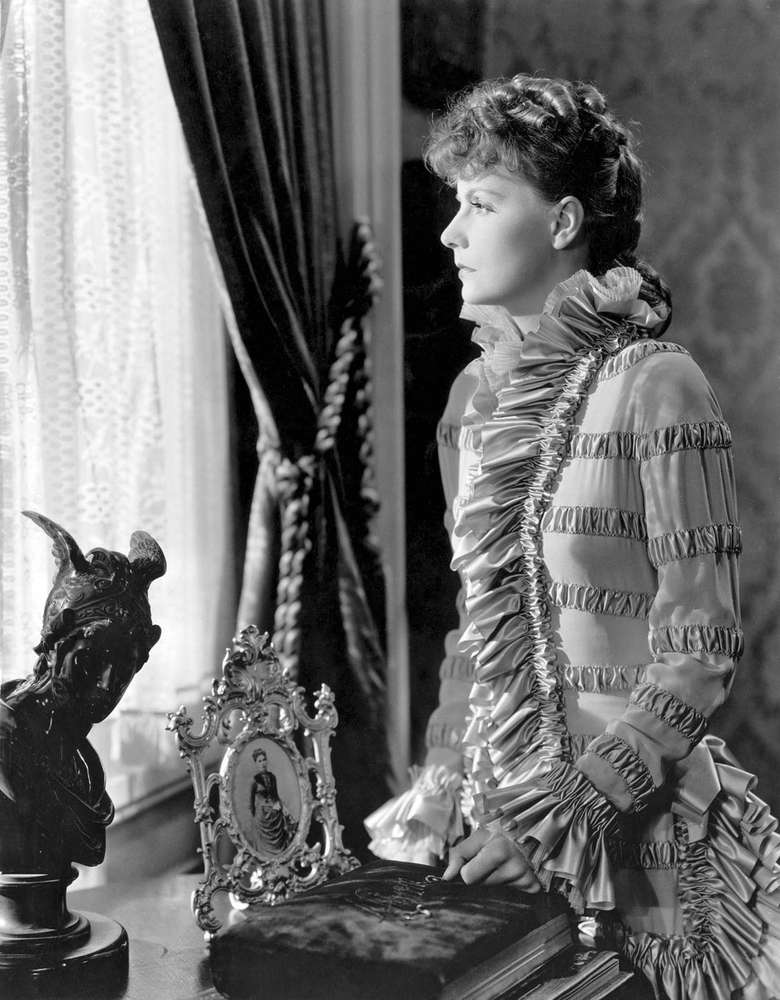

Written by Russian novelist Leo Tolstoy, the eight-part towering work of fiction tells the story of two major characters: a tragic, disenchanted housewife, the titular Anna, who runs off with her young lover, and a lovestruck landowner named Konstantin Levin, who struggles in faith and philosophy.

Tolstoy molds together thoughtful discussions on love, pain, and family in Russian society with a sizable cast of characters regarded for their realistic humanity. The novel was especially revolutionary in its treatment of women, depicting prejudices and social hardships of the time with vivid emotion.
| head | 98.1% |
| body | 97.9% |
| html | 97.9% |